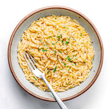

Risotto

Description
Lasagna is a classic Italian dish renowned for its hearty, layered composition and rich, comforting flavors.
It typically consists of wide, flat pasta sheets alternated with layers of savory fillings, such as a robust meat sauce made from ground beef or sausage,
a creamy béchamel or ricotta cheese mixture, and a tangy marinara or tomato sauce.
Ingredients
- Stock
- Rice
- Oil
- Shallots
- Garlic
- White wine
- Salt
- Pepper
- Cheese
Instructions
- Heat the stock to simmer
- Cook the shallots and garlic in the oil
- Add the salt, pepper and wine
- Add rice and stir till fully coated
- Add the hot stock once the wine evaporates
- Keep adding the stock until rice is fully cooked
- once the rice is done take off heat and stirin cheese until it melts